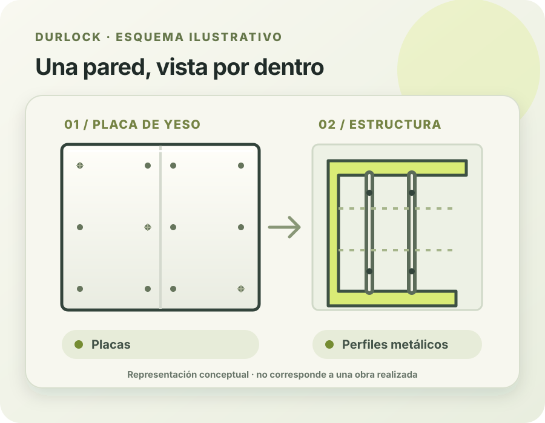

Dividir ambientes
Pensá una nueva distribución para darles a tus espacios otro uso.
Espacios pensados para vos
¿Tenés una idea para tu casa, local u oficina? Contanos qué necesitás y conversemos sobre tu proyecto en Durlock.

Una idea, un nuevo espacio
El Durlock permite pensar nuevas formas de aprovechar un ambiente. Cada proyecto es distinto: compartí tu idea, las medidas y la zona para conversar los detalles.
Hablemos de tu proyecto ↗Ideas para tu espacio
Cada ambiente y cada proyecto tienen necesidades distintas. Estas son algunas ideas para conversar y evaluar según tu espacio.
Pensá una nueva distribución para darles a tus espacios otro uso.
Explorá alternativas para actualizar un ambiente de tu casa o local.
Contanos tu idea y consultá las posibilidades para tu proyecto.
Galería
Próximamente vas a poder conocer más proyectos.
Foto pendiente
Foto pendiente
Foto pendiente
Contacto directo
Escribinos por WhatsApp y contanos qué necesitás hacer. Consultá también si tu proyecto está dentro de la zona de atención.
Escribir por WhatsApp ↗Nicolás Avellaneda 365
Córdoba, Argentina
Consultá por WhatsApp los horarios y la disponibilidad.
Preguntas frecuentes
Contanos tu idea, la zona y, si las tenés, medidas o fotos del espacio.
Sí, escribinos con lo que tenés en mente para conversar las posibilidades.
Podés escribirnos por WhatsApp para confirmar disponibilidad y cobertura.